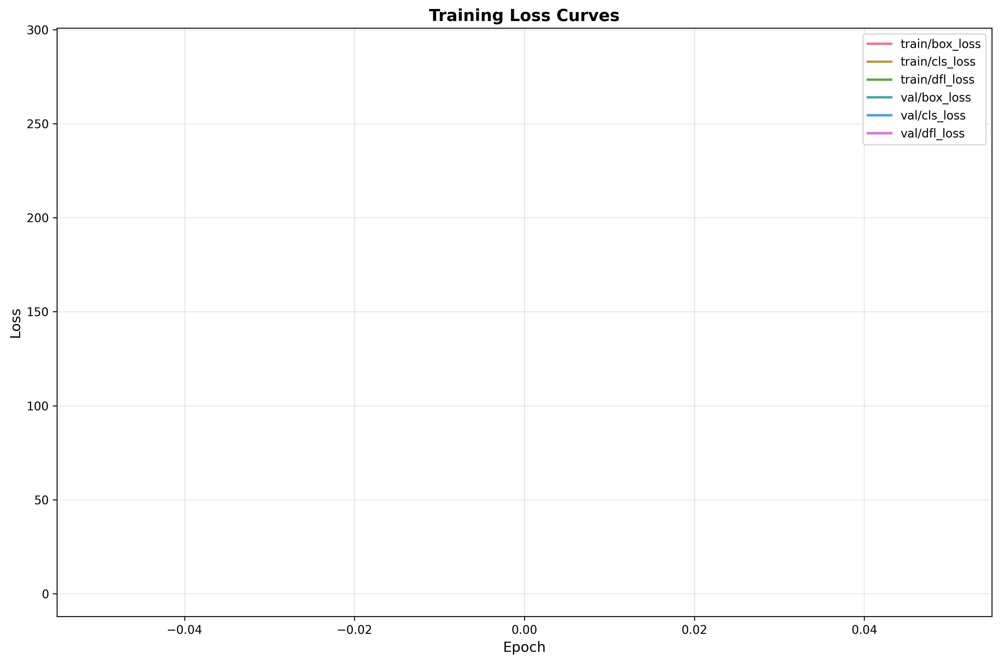
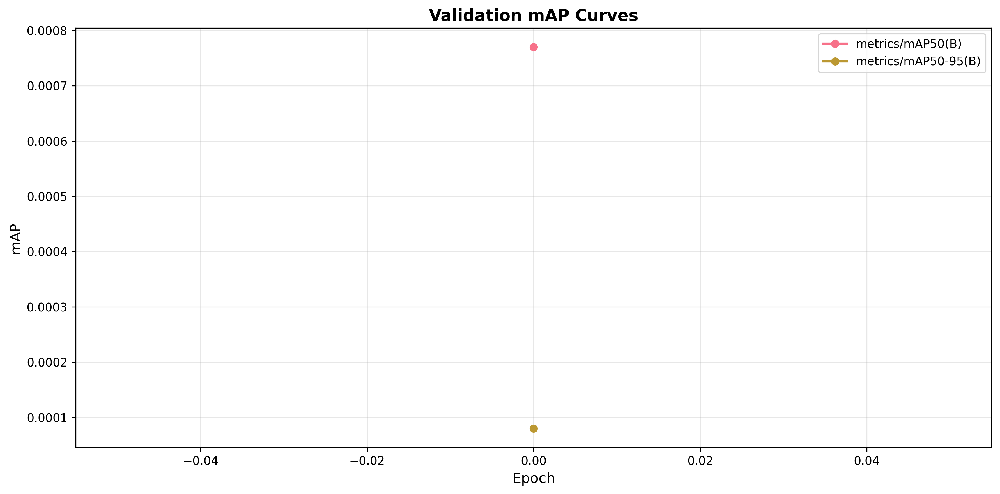
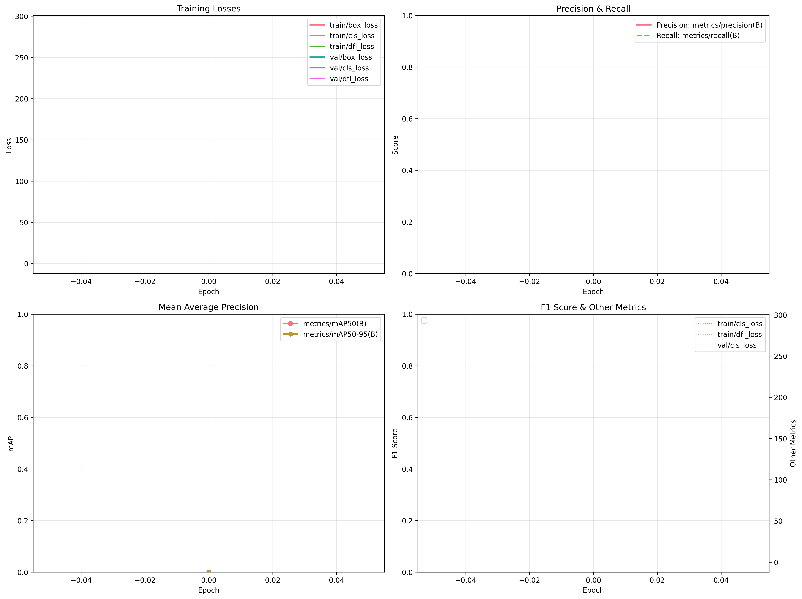
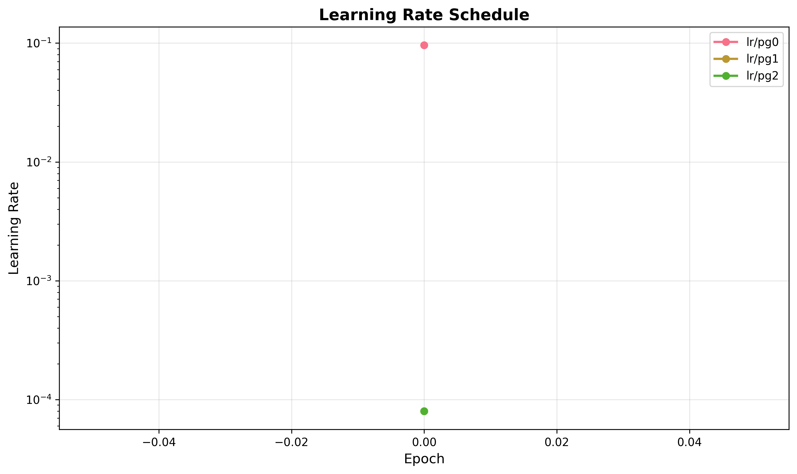
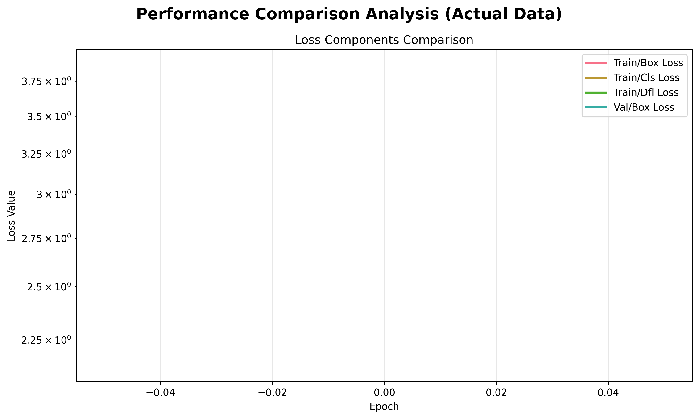
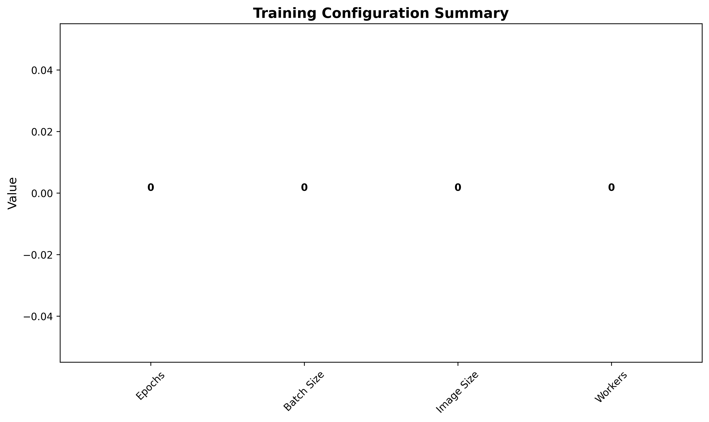

Epoch-by-epoch training progress with all metrics:
| Epoch | time | train/box_loss | train/cls_loss | train/dfl_loss | metrics/precision(B) | metrics/recall(B) | metrics/mAP50(B) | metrics/mAP50-95(B) | val/box_loss | val/cls_loss | val/dfl_loss | lr/pg0 | lr/pg1 | lr/pg2 |
|---|---|---|---|---|---|---|---|---|---|---|---|---|---|---|
| 1 | 785.0100 | 2.7827 | 2.8244 | 2.1355 | 0.6671 | 0.0009 | 0.0008 | 0.0001 | 3.8744 | 286.6280 | 4.3029 | 0.0961 | 0.0001 | 0.0001 |
Note: Best epoch is highlighted in green.






| Parameter | Value |
|---|---|
| Optimizer | N/A |
| Learning Rate | N/A |
| Weight Decay | N/A |
| Workers | N/A |
| AMP Enabled | N/A |
| Model Path | /home/alperen/fomac/FoMAC/model-training/ball-detection/models/player_ball_detector/weights/best.pt |
This report was automatically generated by the YOLO Training Pipeline.
For detailed metrics and raw data, please refer to the Excel report and training logs.
All images are saved in the plots directory alongside this report.